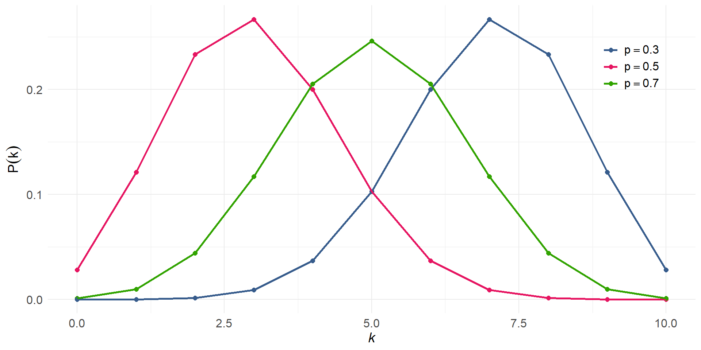

| Distribución | Rango de Y | Notación de Distribución | Función de Enlace Canónica g(μ) |
|---|---|---|---|
| Gaussiana | ℝ | ùí©(Œº, œÉ¬≤) | Œº |
| Gamma | (0, ∞) | Γ(α, ν) | -1/μ |
| Gaussiana inversa | (0, ∞) | ùí©‚Åª¬π(Œº, œÉ¬≤) | -1/Œº |
| Bernoulli | 0, 1 | Ber(p) | logit(μ) |
| Binomial | 0, ..., N | B(N, p) | log(μ / (N - μ)) |
| Beta | (0, 1) | Beta(α, β) | log(μ / (1 - μ)) |
| Poisson | 0, 1, ... | Pois(λ) | log(μ) |
| Binomial Negativa | 0, 1, ... | NegBin(r, p) | log(μ) |
Modelamiento Generalizado Lineal (GLM) y Efectos Mixtos (LMM, GLMM)
Módulo 8
Biol. Irwing S. Saldaña
Diplomado en Estadística Aplicada
en Ciencias Biológicas y Ecológicas en R
Objetivos del módulo
- Comprender los fundamentos del modelamiento generalizado lineal, aplicaciones y limitaciones.
- Elegir adecuadamente la familia de distribución de probabilidades para el modelo a realizar, según la naturaleza de los datos.
- Interpretar de manera correcta los resultados numéricos de un modelo generalizado lineal.
- Aplicar procesos de selección de variables en modelos GLM, LMM y GLMM múltiples.
- Desarrollar scripts de modelamiento generalizado lineal de manera efectiva con sintaxis de R.
Introducción
Temario del módulo
- Concepto de Modelo Generalizado Lineal (GLM).
- Repaso a las familias de distribución relevantes en GLM: Poisson, Binomial Negativa, Bernoulli, Binomial, Beta.
- Funciones de enlace.
- Comparación de modelos.
- Coeficiente de determinación.
- Métricas: AIC, Pseudo R-cuadrado y Log Likelihood.
- Parsimonia.
- Aplicación de modelo gamma en contextos biológicos.
- Aplicación de modelo de poisson en contextos biológicos.
- Sobredispersión.
Temario del módulo (continuación)
- Selección de variables: AIC.
- Aplicación de modelo de bernoulli en contextos biológicos.
- Aplicación de modelo de beta en contextos biológicos.
- Lidiando con ceros inflados
- Extendiendo los modelos: efectos mixtos y su relevancia en ciencias biológicas (LMM, GLMM).
1. Modelos Generalizados lineales

Concepto de Modelo Generalizado Lineal (GLM)
- Extensión de los modelos de regresión lineal.
- Permiten analizar relaciones entre variables \(X\) e \(Y\).
- Cuando la variable de respuesta (\(Y\)) no sigue una distribución normal \(N(\mu, \sigma^2)\).
Conceptos clave de un GLM:
1. función de enlace
Es una función que transforma la media de la variable de respuesta (\(E(Y)\)) para establecer una relación lineal con las variables predictoras (\(X\)).
Garantiza la linealidad de la relación.
- Enlace identidad \(g(\mu) = \mu\).
- Enlace logit \(g(\mu) = \log(\frac{\mu}{1-\mu})\).
- Enlace logarítmico \(g(\mu) = \log(\mu)\)
- Enlace inverso \(g(\mu)=\frac{1}{\mu}\)
¿En qué espacio interpretamos los resultados?
Conceptos clave de un GLM:
2. distribución de la familia exponencial
La variable respuesta \(Y\) debe seguir una distribución que pertenezca a la familia exponencial.
Conceptos clave de un GLM:
3. componente lineal
También llamado componente sistemático, es el lado de la ecuación donde están las variables \(X\) con sus respectivos coeficientes \(\beta\).
Se representa \(\eta = X\beta\).
\[ \eta = X\beta = \beta_0+\beta_1X_1+\beta_2X_2+...+\beta_iX_i \]
¿Cómo lucen los 3 componentes juntos?
\[ g(\mu) = \eta \]
Donde \(g(\mu)\) es la función de enlace que modifica al promedio esperado de la variable \(\mu = E(Y)\). Y \(\eta\), el componente sistemático.
\[ g(\mu) = \beta_0+\beta_1X_1+\beta_2X_2+...+\beta_iX_i \]
Extendiendo la ecuación, no se diferencia mucho del modelo lineal, a excepción de la aparición de \(g(\mu)\), y de que ya no se coloca término de error dado que viene implícito en la distribución de \(Y\) elegida.
Elige la distribución adecuada
Las funciones de enlace canónicas a una distribución son aquellas definidas por defecto para una distribución.
Elige la función de enlace
La función \(g(\mu)\) es conocida como función de enlace (link function). Siempre es reversible.
| Familia | Función de enlace | Función en R | Argumento family/link |
|---|---|---|---|
| Gaussiana | Identity | glm() | gaussian(link='identity') |
| Gamma | Inverse, identity, Log | glm() | Gamma(link='inverse') |
| Gaussiana inversa | Inverse, identity, Log | glm() | inverse.gaussian(link='1/mu^2') |
| Bernoulli | Logit | glm() | binomial(link='logit') |
| Binomial | Logit, Probit, cloglog | glm() | binomial(link='logit') |
| Beta | Log, identity, sqrt | glm() | Beta(link='log') |
| Poisson | Log, identity, sqrt | glm() | poisson(link='log') |
| Binomial Negativa | Log, identity, sqrt | glm.nb() | link = 'log' |
Familias de distribución Exponencial
- Gaussiana (Normal).
- Gamma.
- Gaussiana inversa.
- Poisson.
- Binomial negativa.
- Bernoulli.
- Binomial.
- Beta.
Gaussiana
\[ N(x; \mu, \sigma) = \frac{1}{\sqrt{2 \pi \sigma^2}} e^{\left(-\frac{1}{2} \frac{(x - \mu)^2}{\sigma^2}\right)} \]
- Rango de predicción \(\mathbb{R}\).
- En un LM o un GLM Gaussiano, se espera que los residuales sean normales.
Gamma
\[ \Gamma(x; k, \theta) = \frac{x^{k-1} e^{-x/\theta}}{\Gamma(k) \theta^{k}}, \quad x > 0 \]
- Rango de predicción: \((0, \infty)\).
- En un GLM Gamma, se modela la media de variables positivas continuas.
- La varianza es proporcional al cuadrado de la media.
Gaussiana inversa
\[ \text{IG}(x; \mu, \lambda) = \left( \frac{\lambda}{2\pi x^3} \right)^{1/2} \exp\left( -\frac{\lambda (x - \mu)^2}{2\mu^2 x} \right), \quad x > 0 \]
- Rango de predicción: \((0, \infty)\).
- En un GLM Gaussiana Inversa, se modelan tiempos hasta un evento.
- La varianza disminuye con el aumento de la media.
Poisson
\[ P(k; \lambda) = \frac{\lambda^k e^{-\lambda}}{k!}, \quad k = 0, 1, 2, \dots \]
- Rango de predicción: \(\{0, 1, 2, \dots\}\).
- En un GLM Poisson, se modelan conteos de eventos.
- Media y varianza son iguales: \(\text{E}[X] = \text{Var}[X] = \lambda\).
El problema de la sobredispersión
La sobredispersión ocurre cuando la variabilidad observada en los datos es mayor que la esperada bajo el modelo estadístico asumido (generalmente en modelos Poisson o binomiales).
- Causas comunes:
- Heterogeneidad en los datos no capturada por el modelo.
- Correlación entre las observaciones.
- Valores extremos que incrementan la varianza.
- Efectos en el modelo:
- Estimaciones de los parámetros pueden ser inexactas.
- Aumenta el error estándar, lo que puede llevar a pruebas de significancia erróneas.
- Soluciones:
- Utilizar modelos con distribuciones alternativas (e.g., binomial negativa, modelos quasi, beta-binomial).
- Ajustar un modelo de efectos mixtos si hay correlación entre observaciones.
Binomial Negativa
\[ P(k; r, p) = \binom{k + r - 1}{k} p^r (1 - p)^k, \quad k = 0, 1, 2, \dots \]
- Rango de predicción: \(\{0, 1, 2, \dots\}\).
- En un GLM Binomial Negativa, se modelan conteos con sobre-dispersión.
- Varianza mayor que la media: \(\text{Var}[X] = \mu + \frac{\mu^2}{r}\).
Bernoulli
\[ P(x; p) = p^x (1 - p)^{1 - x}, \quad x \in \{0, 1\} \]
- Rango de predicción: \(\{0, 1\}\).
- En un GLM Bernoulli, se modela la probabilidad de éxito/fallo.
- Utiliza funciones de enlace como logit o probit.
Binomial
\[ P(k; n, p) = \binom{n}{k} p^k (1 - p)^{n - k}, \quad k = 0, 1, \dots, n \]
- Rango de predicción: \(\{0, 1, \dots, n\}\).
- En un GLM Binomial, se modela el número de éxitos en \(n\) ensayos.
- La varianza es \(\text{Var}[X] = n p (1 - p)\).

Beta
\[ \text{Beta}(x; \alpha, \beta) = \frac{\Gamma(\alpha + \beta)}{\Gamma(\alpha)\Gamma(\beta)} x^{\alpha - 1} (1 - x)^{\beta - 1}, \quad 0 < x < 1 \]
- Rango de predicción: \((0, 1)\).
- Modela proporciones y probabilidades continuas.
- La forma de la distribución depende de \(\alpha\) y \(\beta\).
El problema de los ceros inflados
¿Qué es el problema de los ceros inflados?
Ocurre cuando hay una mayor cantidad de ceros en los datos de la esperada bajo la distribución asumida, común en datos de conteo (Poisson o binomial negativa).Causas comunes:
- Procesos duales: combinación de dos procesos, uno que genera ceros y otro que genera conteos.
- Ausencia estructural de eventos (ej. especie no presente en una zona específica).
Efectos en el modelo:
- Subestima los ceros observados, lo que afecta la precisión de las estimaciones, derivando en conclusiones erróneas.
Soluciones:
- Usar modelos de ceros inflados como Poisson Ceros Inflados (ZIP) o Binomial Negativa Ceros Inflados (ZINB).
- Implementar modelos de dos partes que estimen ceros y conteos por separado.
Métricas de comparación de modelos
Akaike Information Criterion (AIC)
- Mide la calidad del modelo con un equilibrio entre ajuste y complejidad.
- Más bajo es mejor: el modelo con el AIC más bajo es el preferido.
Bayesian Information Criterion (BIC)
- Similar al AIC, pero penaliza más los modelos complejos.
- Recomendado cuando se comparan modelos en contextos bayesianos.
Métricas de comparación de modelos
Pseudo-\(R^2\)
- Intenta capturar la capacidad del modelo para explicar la variabilidad en los datos.
- Se basa en ratios de verosimilitudes (Mc Fadden’s \(R^2\), Cox & Snell’s \(R^2\), Nagelkerke’s \(R^2\), etc.)
- Más cercano a 1: mejor ajuste. Más cercano a 0: peor ajuste. Valores \(0.2\) a \(0.3\) indican un buen ajuste.
Test de comparación de modelos
Likelihood Ratio Test (LRT)
- Compara un modelo anidado frente a otro más complejo.
- Útil para evaluar si el modelo más complejo mejora significativamente el ajuste.
Vuong Test
- Compara un modelo no anidado frente a otro (por ejemplo P vs ZIP).
- Útil para evaluar si otro set de variable mejora el modelo.
2. Modelos de Efectos Mixtos (LMM y GLMM)
¿Qué son efectos fijos?
- Variables sobre las que tengo interés predecir o interpretar.
- Son cualquier tipo de variable \(X\).
¿Qué son efectos aleatorios?
- Variables sobre las que no tengo interés predecir o interpretar.
- Son variables de agrupamiento (factores) \(Z\).
- Incluirlos hace que el modelo generalice mejor.
Características
- Tiene múltiples observaciones dentro de cada nivel.
- La variabilidad entre niveles es relevante.
- Se asume independencia entre niveles.
- De 5 a 6 niveles, adecuado.
Modelos de efectos mixtos

https://peerj.com/articles/4794/
Modelos de efectos mixtos
https://en.wikipedia.org/wiki/Mixed_model